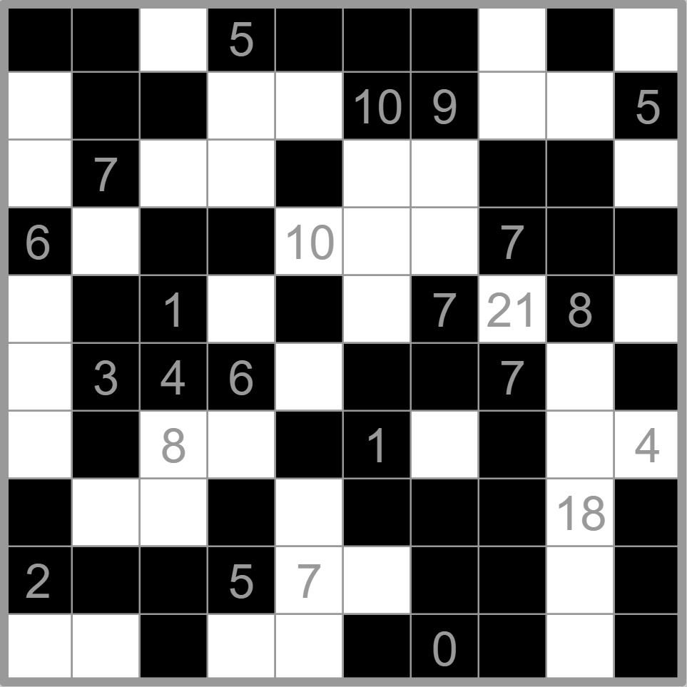
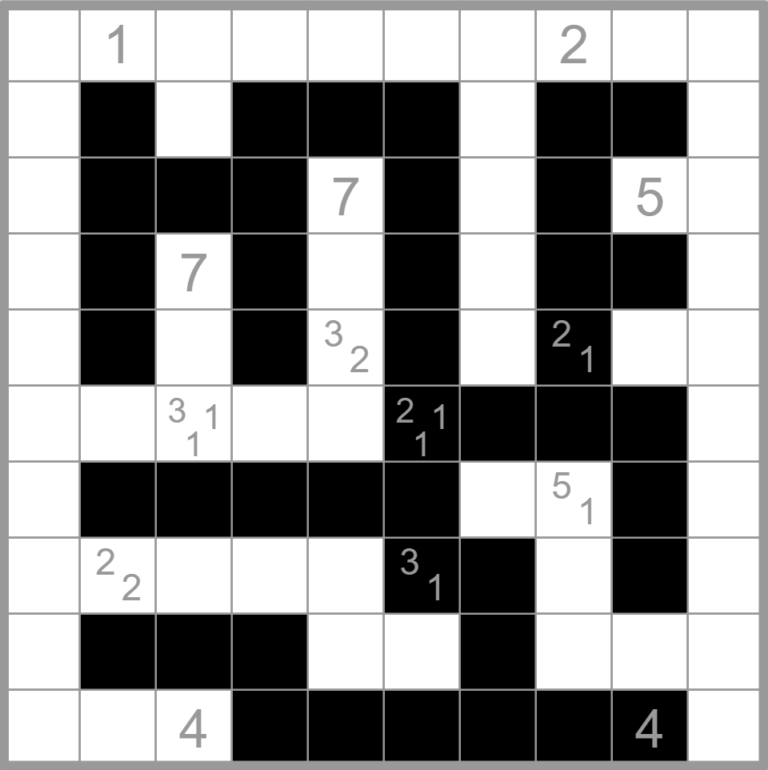
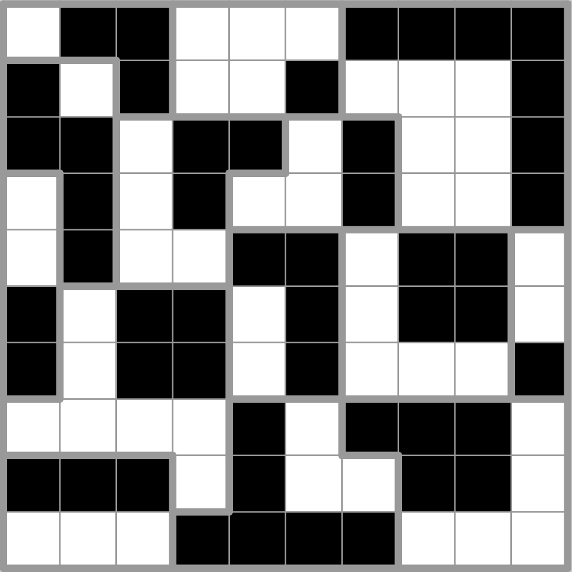
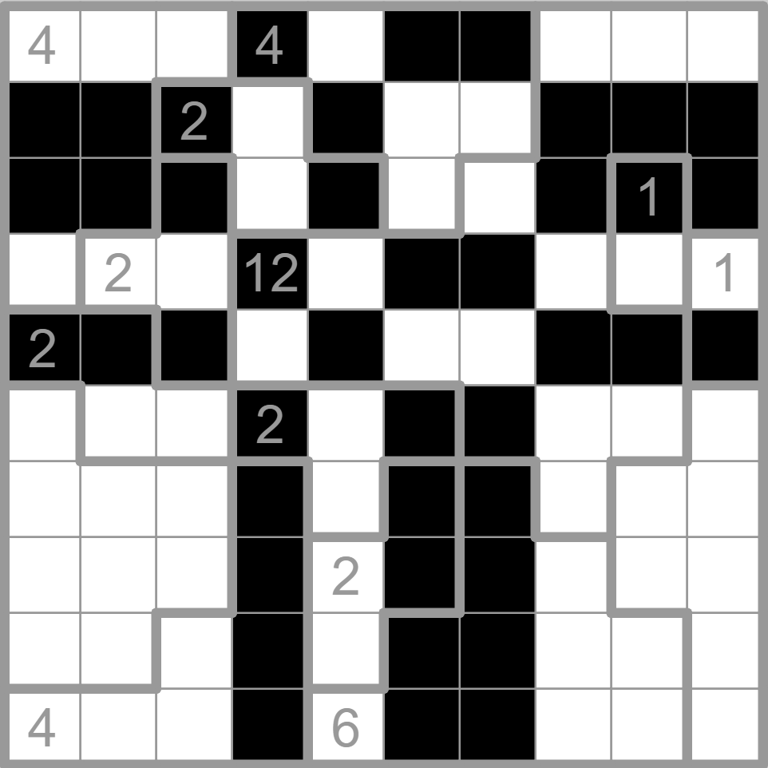
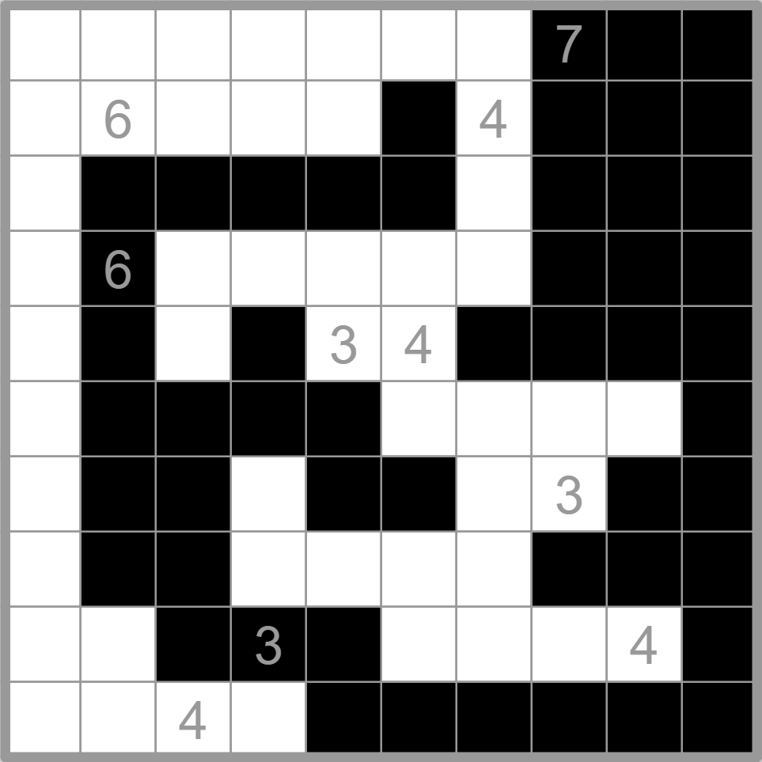
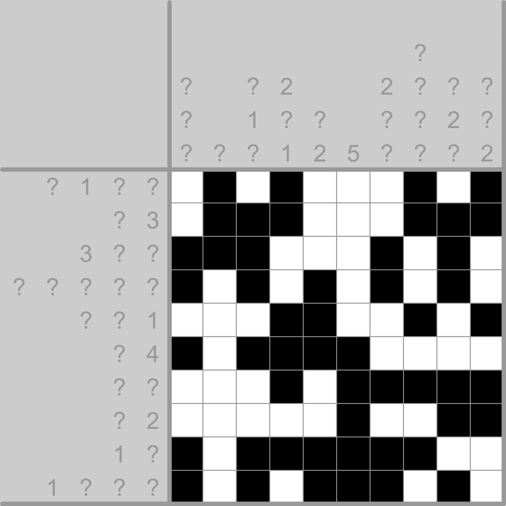
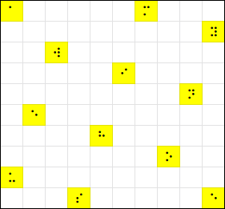

Solution Duality
Answer AMY WINEHOUSE
Written by Anderson Wang and Yannick Yao
This puzzle is presented as six 10×10 grid logic puzzles of various genres (all involving shading) arranged in a 3×2 table, along with another 10×10 grid below the table with several question marks. Another striking feature is that this puzzle is entirely in grayscale with two shades of gray.
If we attempt to solve any of the logic puzzles by e.g. only shading some squares black, there will be multiple solutions—for example, shading all clue cells in the Kurotto leaves no constraints on the remaining cells (remember that the instruction at the beginning explicitly states that clue cells can be shaded). As clued by the title, the puzzle aesthetic, and the wording of the rules to only include the words “shaded” and “unshaded” instead of “black” and “white”, the key realization is that the puzzles must be solved under the constraint that it must also be a valid solution when the whole grid is color-inverted (i.e. switching black and white). Or, to put it another way, the rules must be satisfied regardless of whether black is shaded and white is unshaded, or vice versa. This has different implications for each genre, on top of the explicitly given rules:
-
Kurotto: Each shaded number also clues the number of unshaded cells in adjacent connected groups.
-
Chocona: The number of unshaded cells in each region must also match the given numbers. (In other words, in each region with a number clue, exactly half of the cells must be shaded. This can be confirmed by seeing that any region with a clue number n has an area of 2×n.) Moreover, the unshaded cells must form rectangles as well, meaning that the entire shading pattern will look like a checkerboard, although with each “row” or “column” of rectangles having variable widths/heights.
-
Tapa: Each shaded number also clues the lengths of consecutive unshaded blocks around it. Moreover, both shaded and unshaded regions must be connected, with no 2×2 block shaded by the same color. (In other words, we must follow Yin-Yang rules.)
-
Corral: Each number simultaneously clues the number of shaded and unshaded cells it can “see” in all four directions (i.e. it acts simultaneously as a Corral clue and a Canal View clue). Both colors must each be connected.
-
Stostone: There must be exactly one unshaded block in each region as well, and different blocks cannot be adjacent to each other. This means that each region consists of exactly one boundary between shaded and unshaded cells, and the 2×2 region around each triple and quadruple point formed by the region borders must be colored like a checkerboard. Moreover, if all unshaded “stones” fall down, they must also cover exactly the bottom half.
-
Paint by Numbers: The numbers must also clue the unshaded groups, so each row/column must have an equal number of shaded and unshaded groups. In particular, this means that if a row/column starts with a shaded group, it must end with an unshaded group, and vice versa. Hence the first row must be colored exactly opposite from the last row, and same for first and last columns.
With these modified rules, we can now solve the logic puzzles uniquely, up to inversion of colors (detailed solution videos are in the appendix):
Kurotto:

Tapa:

Stostone:

Chocona:

Corral:

Paint by Numbers:

Now we are ready to tackle the final grid. The instruction that each question mark gives a valid letter and the 3×2 layout of the puzzles strongly clue Braille, and it seems like we just need to look at how each question mark is shaded in each puzzle, convert the six colors into a Braille letter, and read out the answer.
However, one obvious issue remains: each solution can be inverted and still be valid by design, so it is not clear which version of the two we should use for each puzzle. Hence, we must use the fact that each question mark is a valid Braille letter to determine the “polarity” of each puzzle. Here are some facts of Braille that can help determine this (note that the Braille dots are numbered 1~3 down the left column, then 4~6 down the right column):
-
Dots 1 and 4 cannot both be unshaded.
-
Dots 1 and 2 cannot both be unshaded.
-
If dot 3 is unshaded, then dot 6 cannot be shaded unless the letter is W.
Therefore, we can determine the correct polarity for each puzzle (the solutions presented above are already in the right polarity), and reading the corresponding Braille letters in the usual reading order gives the answer AMY WINEHOUSE, a singer-songwriter known for her album Back to Black.

Author’s Notes
Yannick: I love symmetry, and it pains me to see how the shading logic puzzles (often) treat white and black squares differently (which is also why I like Yin-Yang so much, as one of the rare exceptions). Therefore, it feels natural to consider what happens if we force the rules to apply equally to white and black squares. I am pleasantly surprised to see so many interesting global deductions arising from adding this twist (see e.g. Chocona, Stostone, Paint by Numbers). Props to Anderson for coming up such a nice extraction (I was originally planning on just picking five cells in each grid and do five-bit binary), and for writing most of the sub-puzzles (Kurotto, Chocona, Corral, Stostone).
Anderson: We had an amusing red herring in an earlier version of this puzzle—the Corral used to be called Cave, and the Paint by Numbers was Nonogram, which resulted in puzzle names in the same row having the same length (Kurotto=Chocona, Tapa=Cave, Stostone=Nonogram). This made one testsolving group confident the grids had to be paired up in some way.
Appendix: solution videos
Kurotto
Tapa
Stostone
Chocona
Corral
Paint by numbers